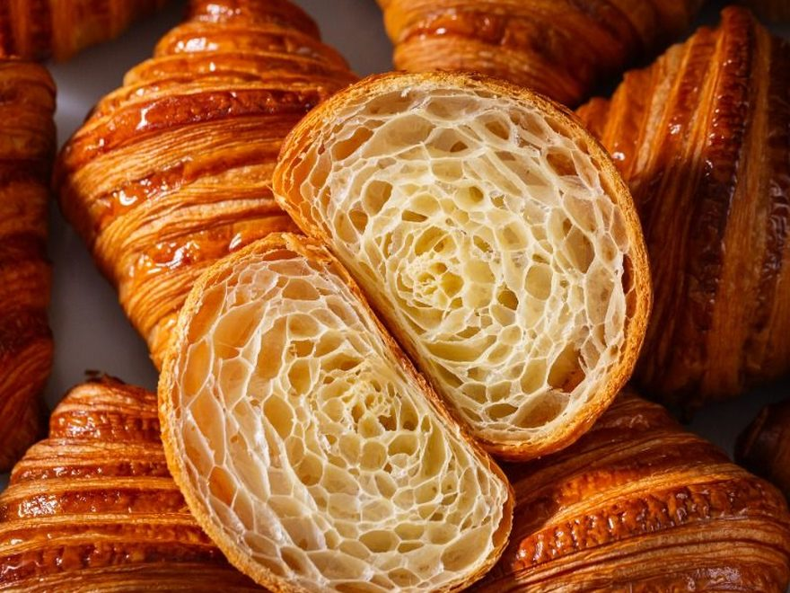

共收录 60 种经典烘焙品。点下面的条件，数字会跟着变。
每种烘焙品都能拆成六个方面：门类、面团基底、膨松方式、油脂、熟成方式、产地。每个方面都可以多选——同一方面选了几个，就是满足任意一个即可；不同方面之间则要同时满足。选了条件，其他条件旁边的数字会立刻按「还能同时满足的」重新计算；数字变成 0 的条件会直接变灰、点不了，不会出现查了个空的结果。
没有同时满足这些条件的烘焙品——把某个条件放宽一点再试。
